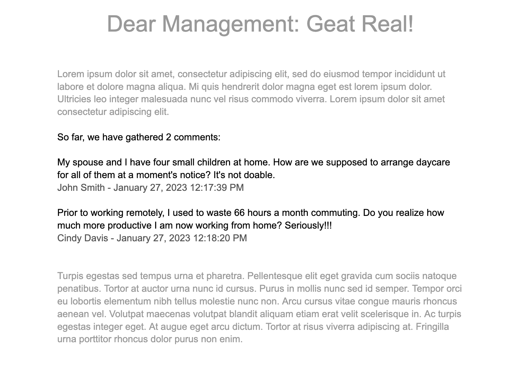

All good things, as the saying goes, come to an end. After letting us work fully remote for past couple of years, management at our fledging startup has recently announced that it expected everyone back at the office five days a week. Goodbye work flexibility, and hello (again) insane commutes.
You, dear reader, and I – AKA The OGs on the company's Slack – are of course not going to put up with that. After all, our fellow employees are looking to us to take a stand, and, darn it, we will. We are going to write a petition in a Google Doc that we will share with management, letting them know exactly how we feel about their inane decision. But it's not just you and I to do the writing: we'll get the troops to contribute their thoughts as well. We'll collect comments from colleagues and embed them in the document using a simple Google Form with two questions: "Enter your comment" and "Enter your name."
We want to inject the form responses in the middle of the document, in between a couple of poetic and highly persuasive paragraphs, and also include a running count of the responses. We want the document to update automatically as new form responses are entered
We'd like our document to look like this:
We could paste a Google Sheet with the form submissions inside the doc as a linked table, but we don't want the comments presented as a table, but rather as a list. Also, a linked table has a limit of 400 cells, and our data will be larger than that. Luckily, we have Apps Script to rescue us. Let's get rescued!
To get started, create a Google Form with the above mentioned two questions. Click on the three dots in the upper-right corner and select "Script editor." We will bound our Apps Script to the form, but we could also bound it to the Google Sheet that collects the form responses.
To act on a form submission, we need to create an Installable Trigger that will execute a function and pass it the submssion info. We could do it manually inside the Apps Script IDE (by click on the Clock icon and following the Create Trigger flow). Let's do this programmatically though:
function createSubmitTrigger() {
const form = FormApp.getActiveForm();
ScriptApp.newTrigger('addComment').forForm(form).onFormSubmit().create();
}Above we get the active form. We then use ScriptApp to create a new trigger, specifying the name of the function to run (addComment). We bound the trigger to the form, and specify the onFormSubmit event. We then create the trigger.
Run this function in Apps Script and when you click on the clock (Triggers) button, you should see the trigger defined. It will execute addComment, which we will develop below.
function addComment(e) {
const form = FormApp.getActiveForm();
const commentsCount = form.getResponses().length;
}We want our function to update the total number of form responses we received. Above, we get the active form, get its responses, and get their count, which we store in "commentsCount".
Now, create a Google Doc, and somewhere in the body enter the following text: "So far, we have gathered 0 comments:" Back in our function, we need Apps Script to find this sentence and replace the count. So, add the code below to the function:
const docId = 'id_of_your_google_doc'
const doc = DocumentApp.openById(docId);
const body = doc.getBody();
const rangeElement = body.findText('So far, we have gathered');
const header = rangeElement.getElement();
header.setText(`So far, we have gathered ${commentsCount} comments:`);Copy the sequence of characters at the end of your Google Doc URL and paste it as the docId string. We use DocumentApp to access to open the doc using its ID. We get its body and find the location of the header. We get the header as an element, so that we can set a text string that contains the updated number of form responses.
Let's work on injecting the actual form response. We want to include the comment, name, and date/time of the response. Let's create a function to format the date and then work on getting the date from the form response object:
function formatDate_(date) {
const hours = date.getHours();
const amPm = hours >= 12 ? 'PM' : 'AM';
if (hours > 12) {
date.setHours(hours - 12);
}
const timezone = Intl.DateTimeFormat().resolvedOptions().timeZone;
const submittedOn =
Utilities.formatDate(date, timezone, 'MMMM dd, yyyy HH:mm:ss') + ` ${amPm}`;
return submittedOn;
}The formatDate_ function will receive a date object. We get the hours count from the date object. If the time is noon or later, we set the "amPm" variable to "PM"; otherwise to "AM". Also, if the hour is bigger than twelve (military time), we subtract 12. Next, we get the script's timezone using Intl, which is a namespace for an Internationalization API that Apps Script supports. Lastly, we format our date string using Utilities.formatDate, passing in the date, timezone, and desired format. We append the amPm to it, and return the string.
Now that we have the date formatting done, we can create the actual comment:
function createNewComment_(e) {
const formResponse = e.response;
const timestamp = formResponse.getTimestamp();
const date = new Date(timestamp);
const submittedOn = formatDate_(date);
const itemResponses = formResponse.getItemResponses();
let comment;
let name;
itemResponses.forEach((itemResponse) => {
const item = itemResponse.getItem();
const title = item.getTitle();
const response = itemResponse.getResponse();
if (title === 'Enter your comment') {
comment = response;
}
if (title === 'Enter your name') {
name = response;
}
});
return { name, comment, submittedOn };
}Above, we get the form response from e.response. It includes the timestamp of the submission, so we create a date from that and pass it to our formatDate_ function. "itemResponses" gets the questions and answers from the form. We iterate over them. We extract the name and comment, and return them together with the date string.
All we need to do now is call createNewComment_ from addComment with the response object, get back the comment variables and add them to the Google Doc. Put the following code right after "header.setText":
const { comment, name, submittedOn } = createNewComment_(e);
const commentsBlock = header.getParent().getNextSibling();
commentsBlock.appendText(`\n${comment}`);
const byLine = commentsBlock.appendText(`\n${name} - ${submittedOn}\n`);
byLine.setForegroundColor(0, byLine.getText().length - 2, '#555555');Above, we use "header" to get its next sibling which is our comment block. We append the comment. We then append the byLine, which we store in a variable. This allows us to format the byline and change its color.
Thanks to you, dear reader, Our Google Doc is now live and being fed with new comments as the form gets submitted. Management is sure to listen and (hopefully) reverse its recent reversal. Here's to working from home!